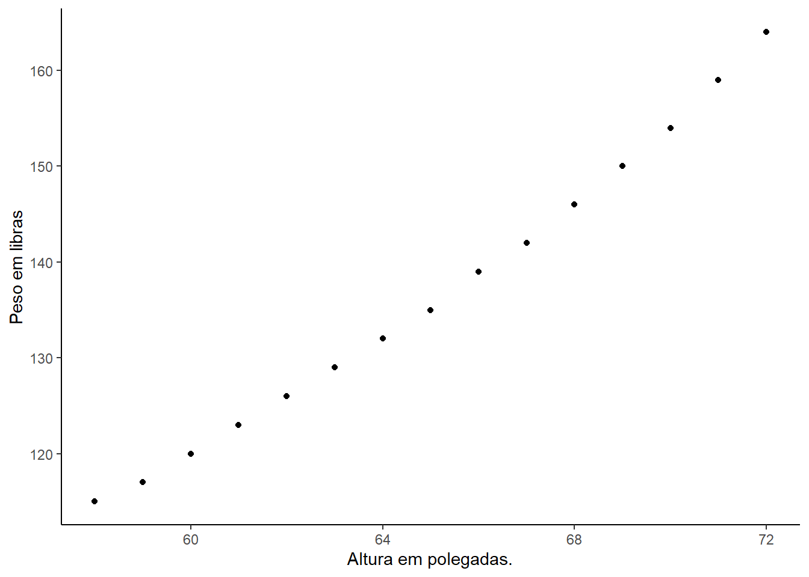

Capítulo 1 Introdução
Francis Galton no artigo Regression towards Mediocrity in Hereditary Stature publicado no Journal of the Anthropological Institute em 1886 cunhou o termo regressão (Galton 1886).
Este artigo evidência que a altura média dos filhos de pais de uma dada altura tendia a se deslocar ou “regredir” até a altura média da população. Em outras palavras, a altura dos filhos de pais extraordinariamente altos ou baixos tende a se mover para a altura média da população.
A regressão procura estudar a relação de uma variável, chamada dependente, em relação a uma ou mais variáveis, as variáveis independentes. O seu principal objetivo de estimar a média da população em termos dos valores conhecidos ou fixos (em amostragem repetida) das variáveis independentes.
Este texto apresenta como fazer uma análise de regressão linear simples no R e para isso é apresentado de forma breve os conceitos de
- Ajuste pelo método do mínimos quadrados;
- Decomposição da soma dos quadrados total;
- Coeficiente de determinação e coeficiente de determinação ajustad; e
- ANOVA para modelos de regressão simples.
1.1 Ajuste do modelo
Em (Nelson 2004) o termo regressão é definido como um modelo estatístico para previsão do valor médio de uma variável aleatória (v.a.) quando outras variáveis, uma ou mais, assumem um valor fixo.
Pode-se citar as seguintes situações como exemplo:
a equação que retorna as distâncias médias entre as paradas dos carros em uma viagem para uma deteminada velocidade, ou
a equação que relaciona o peso médio de uma criança de uma certa idade.
Mais formalmente, seja o valor médio da v.a. Y para um dado valor de X e denotado por \(E(Y|X)\). Logo, a regressão de Y em X é uma equação expressa \(E(Y|X)\) em termos de X. Essa equação é chamada de equação de regressão e prediz o valor médio de Y para um dado valor X.
Nesse contexto:
A v.a. Y é a variavel dependente (ou resposta).
A variável X é a variável independente (ou explanatória).
\(E(Y|X)\) é poder ser abreviada por \(y_x\) ou Y.
Uma regressão linear simples ocorre quando o valor médio de \(Y\) é função linear de apenas uma varíavel \(X\), assim
\[ E(Y|X) = \beta_o + \beta_1 x, \]
onde \(\beta_0\) e \(\beta_1\) são parâmetros e designaodos por coeficientes de regressão, e a principal tarefa da análise de regressão é estimar valores para estes parâmetros a partir de dados amostrais. Se Y apresentar uma distribuição normal com variância constante \(\sigma^2\) para cada valor de X, para uma amostra de valores de n pares \((x_i, y_i)\) independentes, o método de Mínimos Quadrados Ordinários dão as melhores estimativas de \(\beta_0\) e \(\beta_1\).
As estimativas \(\hat{\beta_0}\) e \(\hat{\beta_1}\) dos parâmetros \(\beta_0\) e \(\beta_1\) fornecidas pelo método dos mínimos quadrados ordinários podem ser obtidas na maioria das calculadoras e dos pacotes estatísticos. Eles, também, podem ser calculados diretamente pelas fórmulas:
\[ \hat{\beta_1}=\dfrac{n\sum_i x_iy_i - \sum_i x_i \sum_i y_i}{n\sum_i x_i^2 - \left(\sum_i x_i\right)^2} \]
e
\[ \hat{\beta_0} = \bar{y} - \hat{\beta_1}\bar{x}, \]
onde
\[ \bar{x}=\dfrac{\sum_i x_i}{n} \] e
\[ \bar{y}=\dfrac{\sum_i y_i}{n} \]
A reta com a equação \(Y= \beta_0+\beta_1X\) é chamada regressão linear de Y em X.
1.1.1 Peso e Altura de Mulheres
O data frame women tráz o peso médio e a altura de 15 (quinze) mulheres americanas com idades entre 30 e 39 anos. A variável height (altura) está em polegadas e variável weight (peso) está em libras. O gráfico de dispersão indica a existência de uma relação linear entre a varíavel weigth e heigth.
library(ggplot2)
ggplot(women, aes(x=height, y=weight)) +
geom_point()+
labs(x="Altura em polegadas.",
y="Peso em libras")+
theme_classic()
O código a seguir utiliza as fórmulas para os estimadores \(\hat{\beta}_0\) e \(\hat{\beta}_1\) para encontrar as respectivas estimatias.
n <- nrow(women)
X <- women$height
Y <- women$weight
Sx <- sum(X)
Sx_quadrado <-sum (X^2)
Sy <- sum(Y)
Sxy <- sum(X*Y)
x_barra <- mean(X)
y_barra <- mean(Y)
beta1 <- (n* Sxy - Sx*Sy)/ (n*Sx_quadrado - (Sx)^2)
beta0 <- y_barra - beta1*x_barraAssim, com \(\hat{\beta}_0 = -87.52\) e \(\hat{\beta}_0 = 3.45\), o modelo proposto é:
\[ weigth = -87.52 + 3.45heigth \]
1.2 Inferência em regressão linear
Uma alternativa, equivalente formulação da média da regressão da equação é
\[ Y = \beta_0 + \beta_1 x + \epsilon, \]
onde \(\epsilon\) é um componente aleatório, independente de X, tal que \(\epsilon \sim N(0, \sigma^2 )\), isto é, tem distribuição normal com média zero e variância constante \(\sigma^2\).
Para ser realizada inferência sobre os parâmetros e os valores preditos é necessário que sejam satisfeitos os seguintes pressupostos:
- A relação entre X e Y é linear.
- Os valores de X são fixos, isto é, X não é uma variável aleatória.
- Os erros tém média igual a 0 (zero), \(E(e_i)=0\).
- Para um dado valor de X, a variância dos erros é sempre \(\sigma^2\).
- O erro de uma observação é idependente do erro de outra observação, \(E(e_ie_j)=0\) para \(\forall i \neq j\).
- Os erros tem distrbuição normal.
Combinando os pressupostos 3, 4, 5 e 6 tem-se que os erros não Normalmente e Independentemente Distribuidos com média 0 (zero) e variância \(\sigma^2\).
As pressuposições 1, 2 e 3 permitem escrever \(E(Y) = \beta_0 + \beta_1X\), isto é, a s média das distribuições de \(Y|X\) estão sobre a reta \(\beta_0 + \beta_1X\).
O pressuposto 4 faz com que \(Y|X\) tenham a mesma variância \(\sigma^2\), isto é, os valores de Y relacionados a diferentes valores de X apresentam a mesma variância.
A pressuposição 6 é necessária para que se posssa utilizar as distribuições t e F, a fim de testar hipóteses ou construir intervalos de confiança.
No próximo tópico, será apresentada a decomposição da soma dos quadrado total para para justificar a construção de uma tabela ANOVA, na qual há um teste F, que procura verificar se o parãmetro \(\beta_1\) é significativo.
1.2.1 Decomposião da Soma dos Quadrados Total
A Soma dos Quatrados Total (SQT) é definida para uma amostra de n pares ordenados \((x_i,y_i)\), com \(i = 1,2 , \ldots, n\), pela fórmula:
\[ SQT = \sum_{i=1}^y \left( y_i - \bar{y}\right)^2, \] onde \(\bar{y}\) é a média dos valores observados em \(y\).
Sendo \(\hat{y_i}\) o valor predito pelo modelo de regressão linear simples e partindo da identidade \(y_i - \bar{y}_i = \hat{y} - \bar{y} + y_i - \bar{y}_i\), é possivel dividir a SQT em duas parcelas:
- A Somas dos Quadrados da Regressão (SQReg) dada por:
\[ SQT = \sum_{i=1}^y \left( \hat{y}_i - \bar{y}\right)^2 \] + A Soma dos Quadrados dos Resíduos dado por :
\[ SQT = \sum_{i=1}^y \left( y_i - \hat{y}\right)^2, \]
Assim, tem-se a igualdade \(SQT = SQReg + SQRes\) ou, de outra forma,
\[ \sum_{i=1}^y \left( y_i - \bar{y}\right)^2 = \sum_{i=1}^y \left( \hat{y}_i - \bar{y}\right)+ \sum_{i=1}^y \left( y_i - \hat{y}_i\right)^2 \] ### Exemplo
Seja uma amostra de seis pares de valores.
| X | Y |
|---|---|
| 1 | 3,0 |
| 3 | 8,0 |
| 4 | 7,0 |
| 5 | 11,0 |
| 6 | 10,0 |
| 8 | 12,0 |
Admitindo que X e Y se realcionam pelo modelo \(Y_i = \beta_0 + \beta_1X_i + \epsilon_i\), onde \(e_i\) são independentes com distribuição normal com média zero e variãncia $^2.
Determine as estimativas do modelo.
Utilizando o método dos mínimos quadrados ordinários tem-se que
\[ \hat{\beta_1}=\dfrac{n\sum_i x_iy_i - \sum_i x_i \sum_i y_i}{n\sum_i x_i^2 - \left(\sum_i x_i\right)^2} \]
e
\[ \hat{\beta_0} = \bar{y} - \hat{\beta_1}\bar{x}, \]
Assim,
n <- length(X)
Sx <- sum(X)
Sx_quadrado <-sum (X^2)
Sy <- sum(Y)
Sxy <- sum(X*Y)
x_barra <- mean(X)
y_barra <- mean(Y)
beta1 <- (n* Sxy - Sx*Sy)/ (n*Sx_quadrado - (Sx)^2)
beta0 <- y_barra - beta1*x_barraLogo, \(\hat{\beta_0} = 2.93\) e \(\hat{\beta_1} = 1.24\).
Obtenha a soma dos quadrados
Y_chapeu <- beta0 + beta1*X
SQT <- sum((Y - y_barra)^2)
SQReg <- sum((Y_chapeu - y_barra)^2)
SQRes <- sum((Y - Y_chapeu)^2)Logo,
- SQT = 53.5
- SQReg = 45.16
- SQRes = 8.34
Com estimativas SQT e SQReg pode-se obter uma medida de qualidade do modelo. Esta médida é o \(R^2\), conhecido por coeficiente de determinação, que é definido por
\[ R^2 = \dfrac{SQReg}{SQT}. \] O \(R^2\) é a proporção da variãncia explicada pela regressão. O seu valor varia de 0 (zero) a 1(um) e quanto maior o seu valor melhor. Com os dados utilizados tem-se que \(R^2 = 0.84\).
No caso de uma regressão linear simples, o \(R^2\) pode diminuir com o aumento do número de observações. Para contornar esse incoveniente, foi definido coeficeinte de determinação corrigido
\[ \bar{R}^2 = R^2 - \dfrac{1}{n-2}(1- R^2), \] onde n é quantidade de observações na amostra. Para os dados do exemplo, tem-se \(\bar{R}^2 = 0.81\). É importante notar:
\(\bar{R}^2 < R^2\) e
\(\bar{R}^2\) pode assumir um valor negativo.
Valor Esperado para as Somas dos Quadrados
As somas dos quadrados sendo estimativas e com valores dependentes da amostra analisada, tém distribuição de probabilidade, portanto, é possível se obter para cada soma um seu valor esperado. Os graus de liberdade e valores esperados dos estimadores dessas somas de quadrados que estão na tabela abaixo:
| SQ | Valor Esperado - E(SQ) | Graus de Liberdade - gl : |
|---|---|---|
| SQReg | \(\sigma^2 + \beta_1^2 + \sum x_i^2\) | 1 |
| SQres | \((n-2)\sigma^2\) | n-2 |
| SQT | \((n-1)\sigma^2 + \beta_1^2 + \sum x_i^2\) | n-1 |
Quadrados médios
A fim de construir uma ANOVA são necessários os Quadrados Médios (QM) da SQReg e dos SQRes, que são SReg e SQRes divididos pelos respectivos graus de liberdade.
| SQ | gl | QM | Valor Esperado - E(QM) |
|---|---|---|---|
| SQReg | 1 | \(\dfrac{SQReg}{1}\) | \(\sigma^2 + \beta_1^2 + \sum x_i^2\) |
| SQres | n-2 | \(\dfrac{SQRes}{n-2}\) | \(\dfrac{(n-2)\sigma^2}{(n-2)}= \sigma^2\) |
ANOVA
Os resultados acima podem ser organizados de forma a gerar uma análise de variância para o modelo de regressão linear:
| Fonte de variação FV | gl | SQ | QM | F |
|---|---|---|---|---|
| Regressão | 1 | \(\sum_{i=1}^n (\hat{y}_i - \bar{y})^2\) | \(\dfrac{\sum_{i=1}^n (\hat{Y}_i - \bar{y})^2}{1}\) | \(\dfrac{QMReg}{QMRes}\) |
| Resíduo | n-2 | \(\sum_{i=1}^n (y_i - \hat{y}_i )^2\) | \(\dfrac{\sum_{i=1}^n (y_i - \hat{y}_i)^2}{n-2}\) | |
| Tital | n-1 |
1.2.2 Teste t para os parâmetros
É possível realizar inferência sobre os parãometros estimados e sobre os valores preditos. Para isso é necessário obter a variâncias dessas estimativas. Se os pressupostos dos modelo forem atendidos, pode-se demostrar essas variancias estimadas são:
- Variância de \(\hat(\beta_0)\)
\[ Var(\hat\beta_0)= \left( \dfrac{1}{n}+ \dfrac{\bar{X}}{\sum x_i ^2} \right) \] + Variância de \(\hat(\beta_0)\)
\[ Var(\hat\beta_1)= \left( \dfrac{s^2}{\sum x_i ^2} \right) \]
Referências
Galton, Francis. 1886. “Regression Towards Mediocrity in Hereditary Stature.” Journal of the Anthropological Institute 15: 246–63.
Nelson, David. 2004. Dictionary of Statitics. Penguin UK.